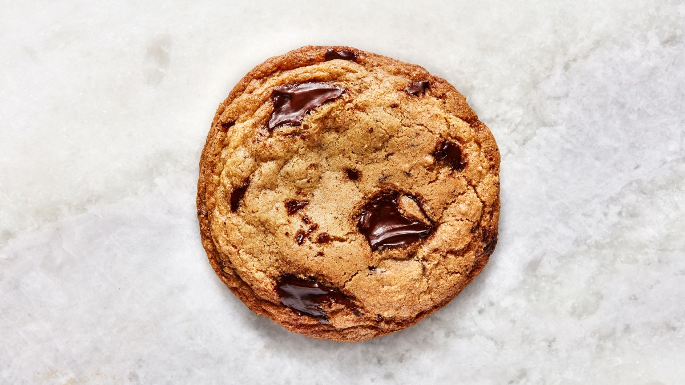

What is Cookies
The cookie, such a small little treat, but surprisingly has a very long history and is loved by millions. Did you ever how the first cookie came to be and what they look like in different cultures? Here is a Brief History of the Cookie. The actual definition of a cookie is pretty wide. A cookie is any flour-based sweet cake that can easily be held in your hand. Cookies can either be crisp or soft, thick or thin.
The Origin of the Cookie
The first cookies are thought to be test cakes bakers used to test the oven temperature. They date back as early as 7th Century A.D. Persia which is now Iran. They were one of the first countries to grow and harvest sugar cane.
With war and exploration eventually sugar was introduced to the Mediterranean area and European countries and so were cookies. And by the end of the 14th century, cookies were common place in European cities. The earliest cooking books from the Renaissance were chockful of cookie recipes.
One popular type of cookie in Elizabethan England was a square short-cookie made with egg yolks and spices and baked on parchment paper.
After the Industrial Revolution, improvements in technology led to more variety of cookies be available commercially. The base for all cookies were the same though: wheat flour, sugar and fats like butter and oil.